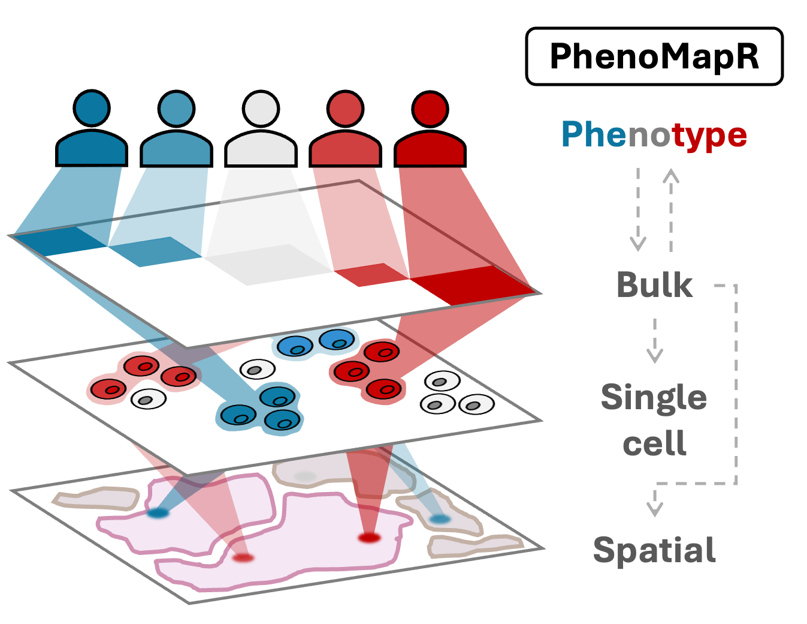
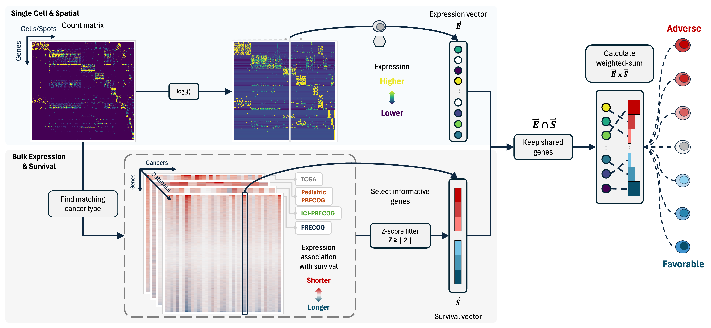

Introduction

Single-cell and spatial transcriptomics methods provide an improved
resolution and understanding of the cell types and spatial organization
underlying healthy and malignant biology. However, many single-cell and
spatial studies lack sufficient sample size for robust associations
between a sample phenotype (e.g. overall survival) and cell types or
spatial locations. In contrast, lower resolution methods such as bulk
gene expression profiling have been applied at scale in large,
clinically-annotated datasets, providing robust signatures for phenotype
associations such as outcomes across cancers (e.g. PRECOG 2.0). PhenoMapR
bridges this gap between the improved resolution of single-cell/spatial
approaches and the robust phenotype signals identified across bulk
expression studies by mapping the phenotypic signal directly onto
individual cells and spatial locations. Although developed with
a cancer-centric focus, PhenoMapR can be used to map any
phenotypic signal associated with bulk expression datasets across
transcriptomic data modalities.
Features
PhenoMapR is intended to be a flexible framework for
mapping phenotypic signal between gene expression data acquired and
stored in different formats. Some of the main features are:
| Feature | Description |
|---|---|
| Works with Multiple Input Formats | Supports matrices, data.frames, Seurat, SingleCellExperiment, SpatialExperiment, and AnnData objects |
| Built-in Bulk Cancer Phenotype References | Pre-calculated gene expression meta-z scores for outcomes across TCGA & Adult/Pediatric/Immunotherapy PRECOG datasets |
| Flexible Scoring | Score bulk, single-cell, and spatial inputs. For single-cell and spatial data, pseudobulk scoring can also be performed |
| Custom Signatures | Not interested in cancer? Generate and/or use your own z-score phenotype references |
| Marker Gene Identification | Automated marker gene identification of phenotype associated cells/spots |
| Visualization | Summary plots for dataset results (marker gene heatmaps, cell type score enrichment, etc.) |
| Efficient | Optimized approach for ultra-fast scoring |
Getting Started
The primary function of PhenoMapR is
PhenoMap(). The basic use of this function
takes a gene expression file + a reference phenotype
signature and generates a PhenoMapR score per sample/cell/spot. For
single-cell and spatial inputs, a sample-level PhenoMapR score can be
generated using the pseudobulk argument.
PhenoMap() arguments:
| Argument | Description |
|---|---|
| expression | Expression data (matrix, Seurat, SCE, etc.) |
| reference | Reference dataset name or custom data.frame |
| cancer_type | Cancer type label (required for built-in references) |
| z_score_cutoff | Absolute z-score threshold (default: 2) |
| pseudobulk | Aggregate samples/slices before scoring? (default: FALSE) |
| group_by | Grouping variable for pseudobulk |
| assay | Assay name for Seurat/SCE objects |
| slot | Seurat slot (“data”, “counts”, “scale.data”) |
| verbose | Print progress messages |
For the simplest use case of PhenoMapR, implement the following:
# Download PhenoMapR using the following:
if (!require(devtools)) install.packages("devtools")
devtools::install_github("brooksbenard/PhenoMapR")
# Load PhenoMapR in your R session:
library(PhenoMapR)
# Score samples in a bulk expression matrix
scores <- PhenoMap(
expression = bulk_matrix, # genes (rownames) x samples (colnames)
reference = "precog", # can be one of precog, pediatric_precog, ici_precog, or tcga
cancer_type = "BRCA" # use list_cancer_types(reference) to see avaliable options
)
# Score single-cell/spatial data
scores <- PhenoMap(
expression = seurat_obj,
reference = "tcga",
cancer_type = "LUAD",
assay = if ("Spatial" %in% names(seurat_obj@assays)) "Spatial" else "RNA",
slot = if ("Spatial" %in% names(seurat_obj@assays)) "counts" else "data"
)Supported Input Types
PhenoMapR is designed to work on a range of gene
expression input formats. The primary requirement, regardless of input
type, is that the expression data takes the form of
Genes (rownames) x Samples/Cells/Spots (colnames).
Matrix/Data.frame
Expression matrix: genes (rows) x samples/cells (columns).
Seurat Objects
Single-cell and spatial Seurat objects; use assay and
slot to match your data.
library(Seurat)
# Single-cell
scores <- PhenoMap(
seurat_obj,
reference = "tcga",
cancer_type = "LUAD",
assay = "RNA",
slot = "data"
)
# Add scores back to Seurat object
seurat_obj <- add_scores_to_seurat(seurat_obj, scores)
# Spatial
scores <- PhenoMap(
spatial_seurat,
reference = "precog",
cancer_type = "BRCA",
assay = "Spatial",
slot = "counts"
)SingleCellExperiment Objects
Use the assay name that holds your (e.g. log-normalized) expression.
library(SingleCellExperiment)
scores <- PhenoMap(
sce_obj,
reference = "pediatric_precog",
cancer_type = "Neuroblastoma",
assay = "logcounts"
)
# Add scores to colData
sce_obj <- add_scores_to_sce(sce_obj, scores)AnnData Objects
PhenoMapR can score AnnData objects via reticulate
(e.g. from Scanpy).
library(reticulate)
adata <- import("scanpy")$read_h5ad("data.h5ad")
scores <- PhenoMap(
adata,
reference = "precog",
cancer_type = "BRCA"
)Built-in Reference Datasets
PhenoMapR comes pre-loaded with a comprehensive suite of
pan-cancer meta-z signatures for gene expression and outcomes across
adult, pediatric, and immunotherapy-treated cohorts. These databases are
sourced from PRECOG 2.0 (Benard
et al., Nucleic Acids Research 2026). PRECOG 2.0 includes
335 cancer datasets with survival or response data for >46,000
patients, covering ~55 malignancies.
list_cancer_types("precog") (or
"tcga", "pediatric_precog",
"ici_precog") to see cancer labels for your reference of
choice.

Under the hood
At a high level, PhenoMapR:
- Processes the input gene expression data into a cleaned format by updating gene IDs and normalizing the expression (if needed).
- Selects pan-cancer prognostic meta-z score signatures from PRECOG/TCGA based on input cancer type.
- Filters to strongly prognostic genes (by |z-score|) and keeps intersecting genes between reference and query data.
- Computes weighted-sum scores per sample/cell/spot, where weights are prognostic z-scores. Scores are computed almost instantly by taking the cross product of the expression matrix and z-score signature vector.
-
Optionally defines prognostic groups and markers by
slicing the score distribution (e.g. top/bottom 5%) and running
Seurat::FindAllMArkers().

Advanced Usage
PhenoMapR was built with the primary goal of helping to
quickly identify samples, cells, and spatial locations that might be
most therapeutically relevant in cancer. It accomplishes this, in part,
by incorporating the most comprehensive databases of gene expression
associations with outcomes across cancers (TCGA and PRECOG). However,
rare cancer types not included in TCGA/PRECOG and emerging immunotherapy
datasets will provide valuable resources from which to derive robust
prognostic signatures. To remain flexible in this evolving landscape, we
provide functionality in PhenoMapR to use and derive custom
reference signatures from proprietary and emerging bulk expression
datasets.
Additionally, although developed with a cancer-centric
focus, PhenoMapR has some broad functionality that can
be applied outside of cancer.
Custom Reference Data
Maybe you have a specific gene signature or pre-computed gene z-score phenotype reference you would like to score against. Simply upload your custom reference signature (rownames are HUGO IDs and columns are z-scores) and score your input expression data.
# Create custom z-score reference
custom_ref <- data.frame(
row.names = c("TP53", "MYC", "EGFR", "BRCA1"),
my_signature = c(3.2, -2.5, 2.8, 1.9)
)
scores <- PhenoMap(
expression = my_data,
reference = custom_ref,
z_score_cutoff = 1.5
)Derive reference from bulk expression and phenotype
If you have bulk expression (genes as rows, samples as
columns) and a phenotype (e.g. clinical response (R/NR),
time-to-survival (with censor), or any other continuous phenotype), the
PhenoMapR
derive_reference_from_bulk() function
derives gene-level z-scores for use as the reference when scoring bulk,
single-cell, or spatial data. The function expects genes as rows and
samples as columns; if the matrix appears to be the opposite, it will
transpose and message. It then cleans gene names to approved HUGO
symbols (if HGNChelper is installed), checks/normalizes
expression, and computes gene association z-scores (Cox for survival,
logistic regression for binary, correlation for continuous).
Binary phenotypes and sign: Encode the outcome as a
factor with levels in the order you care
about. Set
binary_positive_reference = "first" so
that the first level is the “positive” phenotype in the
logistic model: genes with positive z-scores are those
whose higher expression is associated with that first
level
(e.g. factor(c("wt","mut",...), levels = c("mut", "wt")) if
mutated is the phenotype of interest for positive scores). The
default
binary_positive_reference = "second"
matches older behaviour (second level coded as the positive class).
After deriving the reference,
PhenoMap(..., reference_sign = -1) flips
all reference z-scores at scoring time if you need the opposite sign
without re-fitting.
# Bulk: genes (rows) x samples (columns); sample IDs = colnames
bulk_expr <- matrix(...) # e.g. 5000 genes x 50 samples
pheno <- data.frame(
sample_id = colnames(bulk_expr), # must match expression column names
# Put the phenotype of interest FIRST so positive scores align with it:
response = factor(..., levels = c("mutated", "wildtype"))
)
# Derive reference z-scores
ref <- derive_reference_from_bulk(
bulk_expression = bulk_expr,
phenotype = pheno,
sample_id_column = "sample_id",
phenotype_column = "response",
phenotype_type = "binary",
binary_positive_reference = "first"
)
# Score single-cell or spatial data with the derived reference
scores <- PhenoMap(expression = my_seurat, reference = ref)For survival, provide survival_time and
survival_event column names and set
phenotype_type = "survival". Optional: install
HGNChelper for HUGO symbol cleaning and
survival for Cox models.
Pseudobulk Aggregation and Scoring
Many single-cell and spatial datasets include multiple samples. It is
fair to assume that the cell/spot score distribution across a dataset
might be heavily skewed by the sample from which they came. To rank
samples in a dataset based on their overall phenotype score, set
pseudobulk = TRUE and select the
sample/patient metadata label to perform pseudobulking of cells/spots.
The PhenoMap() function will then score
the aggregate expression profile of each sample in the dataset.
plot_pseudobulk_scores() can be used to
visualize the sample score distribution for your dataset. This may help
identify if the most phenotypically relevant cells/spots in the dataset
are enriched in samples with a phenotype skew (e.g. more adverse cells
being enriched in more adversely prognostic patients).
# Aggregate single cells by sample to score samples rather than cells/spots
scores <- PhenoMap(
seurat_obj,
reference = "tcga",
cancer_type = "LUAD",
pseudobulk = TRUE,
group_by = "patient_id"
)Normalize Scores
The weighted-sum scoring approach of PhenoMapR generates
absolute values as output. Negative scores reflect an overall favorable
signature while positive scores reflect a more adverse signature. The
normalize_scores() function converts
PhenoMap scores to z-scores for sample-level relative comparisons.
scores_df <- PhenoMap(...)
# Convert to z-scores
scores_df$score_zscore <- normalize_scores(scores_df[, 1])Phenotype Groups and Marker Genes
A major advantage of PhenoMapR is the ability to
rank-order all samples/cells/locations based on their PhenoMap score. To
help characterize the samples/cells/spots that are most phenotypically
relevant, we provide some high-level analysis functions:
The define_phenotype_groups() function
uses a heuristic threshold that defines the top and bottom n% phenotype
cells per dataset (adverse = highest scores, favorable = lowest). This
function defaults to selecting the top and bottom 5th percentile to
label as “adverse” and “favoable”, however the user can dynamically set
this threshold based on their desired stringency.
The find_phenotype_markers() function
takes the group labels from
define_phenotype_groups() and finds unique
marker genes for those populations using Seurat’s
FindMarkers (requires Seurat):
# Score and define groups (top 5% = adverse, bottom 5% = favorable)
scores <- PhenoMap(seurat_obj, reference = "precog", cancer_type = "BRCA")
groups <- define_phenotype_groups(scores, percentile = 0.05)
# One group column per score; values: "adverse", "favorable", "other"
table(groups$phenotype_group_weighted_sum_score_precog_BRCA)
# Find marker genes via Seurat::FindMarkers (adverse vs rest, favorable vs rest)
markers <- find_phenotype_markers(
seurat_obj,
group_labels = groups,
group_column = "phenotype_group_weighted_sum_score_precog_BRCA",
cell_id_column = "cell_id"
)
head(markers$adverse_markers) # genes enriched in top 5% (worst prognosis)
head(markers$favorable_markers) # genes enriched in bottom 5% (best prognosis)Vignettes
Detailed walkthroughs for the main uses of PhenoMapR (on
the pkgdown
site and in the repo under vignettes/ here):
| Vignette | Description |
|---|---|
| Score Single-cell data | Score a pancreatic cancer single cell dataset (CRA001160) with TCGA and PRECOG Pancreatic references; scatterplot and boxplots by cell type; prognostic markers and proportion by sample. |
| Score Spatial transcriptomics data | Process a spatial transcriptomics sample from HTAN with PRECOG Pancreatic; score distributions, prognostic groups, and spatial maps of score and group on the tissue image. |
| Score bulk expression data | Score 289 primary/metastatic bulk samples with PhenoMapR PRECOG references; stratify by primary vs metastatic; Kaplan–Meier survival by prognostic score. |
| Generate and use a custom reference signature | Build a custom gene z-score reference from bulk expression and
survival using derive_reference_from_bulk(), then score
samples with that reference. |
Citation
If you use PhenoMapR, please cite the software and the
reference datasets you use.
PhenoMapR (software)
Benard B. PhenoMapR: Phenotype mapping from bulk gene expression onto
single cell, spatial, and bulk transcriptomics. R package. https://github.com/brooksbenard/PhenoMapR. See also
CITATION.cff in the repository for machine-readable
citation.
Reference datasets
- PRECOG 2.0 (meta-z scores): Benard B et al. PRECOG 2.0: an updated resource of pan-cancer gene-level prognostic meta-z scores. Nucleic Acids Research (2026). https://academic.oup.com/nar/article/54/D1/D1579/8324954
- PRECOG / TCGA: Gentles AJ et al. The prognostic landscape of genes and infiltrating immune cells across human cancers. Nature Medicine 21, 938–945 (2015). https://www.nature.com/articles/nm.3909
- Pediatric PRECOG: Stahl et al. Cancers 13(4), 854 (2021). https://www.mdpi.com/2072-6694/13/4/854